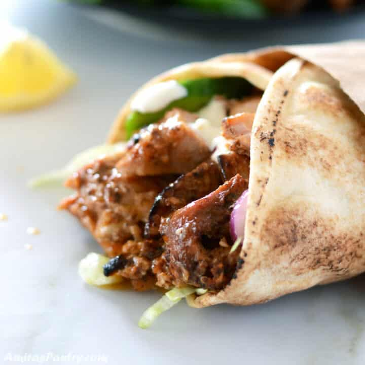

Chicken Shawarma

Description
Incredibly tasty chicken shawarma recipe that will transfer you to the Middle East. Best authentic marinade with exotic Middle Eastern spices that will make your shawarma not like any other, one that does not taste like just spiced grilled chicken.
Ingredients
- Chicken, I like using chicken thighs but chicken breasts work as great.
- Yogurt, this is a yogurt based marinade.Yogurt, this is a yogurt based marinade.
- Mayonnaise, will actually release the powerhouse flavors of the many spices we are using.
- Orange zest, orange juice, lemon zest and vinegar these are what will give your shawarma much needed acidity and a hint of sweetness.
- Shawarma spice mix, a bunch of spices that I bet are already there in your home.
- Onions and garlic, necessary basic flavors.
Steps
- In a food processor, combine red pepper, onion, and garlic. Pulse twice until roughly chopped.
- Add mayonnaise, tomato paste lemon zest, orange zest and yogurt then pulse until combined.
- In a large bowl, combine dry spices, lemon juice, orange juice and olive oil.
- Add the onion mixture to the bowl and mix well
- Add chicken and toss well to coat. Fold chicken pieces in half and thread it into two metal skewers. Arrange the metal skewers over the pan, as shown above, so they are elevated. Cover with chicken skin if available.
- Bake in the oven for about 40 minutes. Remove the skin and brown the chicken for about 10 minutes on each side.